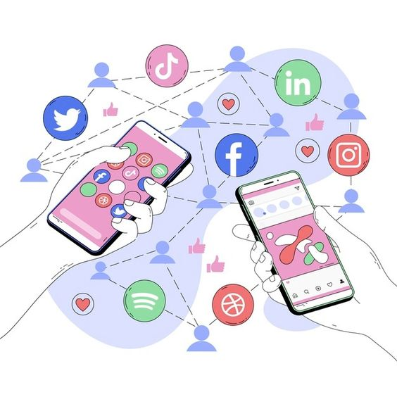
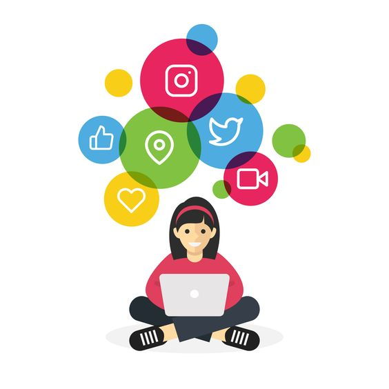

¿Qué son las Redes Sociales?

Las redes sociales, en el mundo virtual, son sitios y aplicaciones que operan en niveles diversos, como el profesional,
de relación, entre otros, pero siempre permitiendo el intercambio de información entre personas y/o empresas.
Cuando hablamos de red social, lo que viene a la mente en primer lugar son sitios como Facebook, Twitter y LinkedIn o
aplicaciones como TikTok e Instagram, típicos de la actualidad. Pero la idea, sin embargo, es mucho más antigua: en la
sociología, por ejemplo, el concepto de red social se utiliza para analizar interacciones entre individuos, grupos,
organizaciones o hasta sociedades enteras desde el final del siglo XIX.
En Internet, las redes sociales han suscitado discusiones como la de falta de privacidad, pero también han servido como
medio de convocatoria para manifestaciones públicas en protestas. Estas plataformas crearon, también, una nueva forma de
relación entre empresas y clientes, abriendo caminos tanto para la interacción, como para el anuncio de productos o servicios.
Redes Sociales más utilizadas
|
+2449 MILLONES DE USUARIOS |
YouTube+2000 MILLONES DE USUARIOS |
+1000 MILLONES DE USUARIOS |
|
TikTok
+800 MILLONES DE USUARIOS |
+610 MILLONES DE USUARIOS |

+339,6 MILLONES DE USUARIOS |
Ventajas de las Redes Sociales

El uso de redes sociales ha sido absorbido por personas en todo el mundo y hoy ya es parte de la rutina. Esto hizo de esos espacios un lugar donde las marcas y empresas también quisieran estar para interactuar con sus prospectos y clientes, trayendo posibilidades muy positivas, como:
- Comunicación rápida.
- Conexiones sociales.
- Acceso a la información.
- Conciencia social.
- Contacto y oportunidades profesionales.
Desventajas de las Redes Sociales
Si bien existe una conciencia de que las redes sociales han traído a nuestras vidas diferentes maneras de interacción y
conexión con personas o mercados afines, no se puede desconocer que estas tienen retos y riesgos.
Conforme se mantiene su uso, aparecen más plataformas sociales y las decisiones de compra de productos o servicios se
intensifican, estas tienen un peso importante en la personalidad de los usuarios y en su comportamiento cotidiano.
Revisemos algunas de las desventajas de las redes sociales (que a nuestro juicio) impactan en los públicos.
- Menos contacto cercano, más percepción digital.
- Riesgos de imagen personal o profesional.
- Ansiedad y desequilibrio emocional.
- Inseguridad y ciberdelincuencia.